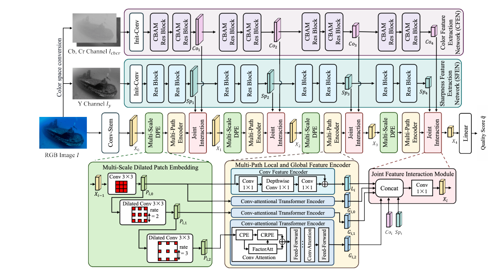

Perception-Aware Underwater Image Quality Assessment: Data Set, Perceptual Quality Scores and Assessment Network
|  |
The architecture of the proposed PAUQA-Net.
Abstract
Underwater Image Quality Assessment (UIQA) plays an important role in assess the effectiveness of Underwater Image Enhancement (UIE) algorithms or to evaluate the quality of underwater images.
However, accurate UIQA that are consistent with human perception remains challenging. This dilemma on one hand is attributed to the lack of real human visual perception UIQA data, and on the other
hand that the quality feature representation used by exist- ing UIQA algorithms are inconsistent with human perceptions. To address these issues, we introduce a Large scale Underwater Image Quality
Data set (LUIQD) which acquires human perception image quality score, and propose an UIQA net- work based on an efficient visual Transformer network with color and sharpness assessment. Specifically,
the LUIQD includes 64,180 real underwater images and enhance images covering a wide range of scenes, target and imaging conditions. Subjective user studies are designed to annotate and evaluate the
perceptual quality score of the images in LUIQD. Based on the analysis of the mech- anisms of human perception, we further design a data-driven UIQA network that integrates an efficient convolutional
attention vision transformer to extract multi-scale features by a multi-path structure. Considering the specificity of human perception of underwater images, features from the chrominance and luminance
domains are extracted and fused with local and global images features for joint feature interaction. This UIQA network is named as Perception-Aware Underwater image Quality Assessment Network
(PAUQA-Net). Extensive exper- iments conduted on LUIQD and other data sets demonstrate that the proposed PAUQA-Net achieves superior assessment performance compared with the most popular UIQA and IQA
methods.
Links

Experimental Results

|
| |
Experimental results on the LUIQD and LUIQD-RAW data sets.

|
| |
Experimental results on the UWIQA and SAUD data sets.

|
| |
Scatter plots of the predicted objective scores against the subjective quality scores of different UIQA and IQA methods on the proposed LUIQD validation set.
Citation
@article{lin2025pauqa,
title={Perception-Aware Underwater Image Quality Assessment: Dataset, Perceptual Quality Scores and Assessment Network},
author={Bosen Lin, Junyu Dong, and Xinghui Dong},
journal={IEEE Transactions on Circuits and Systems for Video Technology},
year={2025}
}